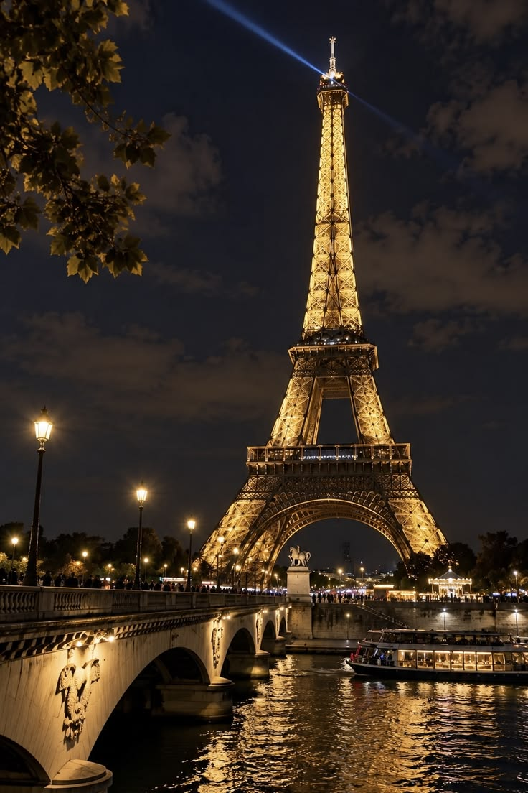
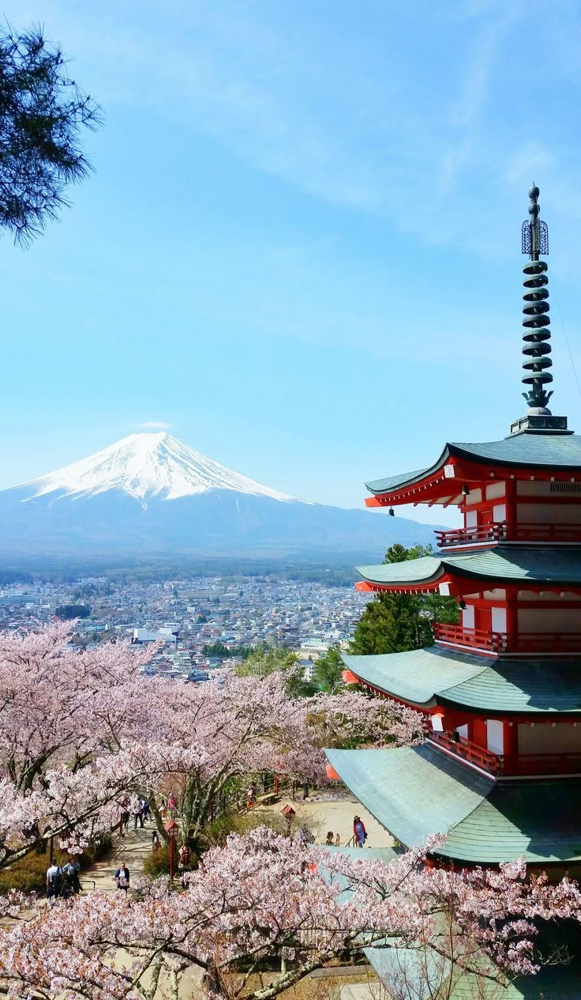
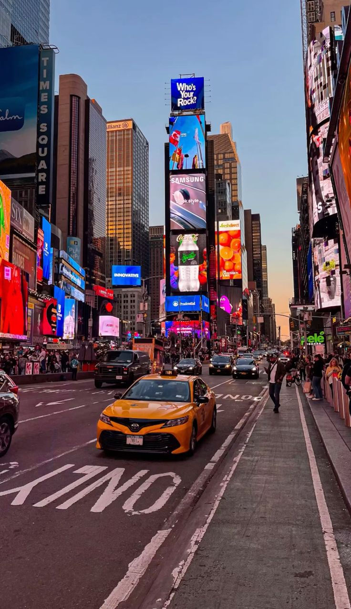
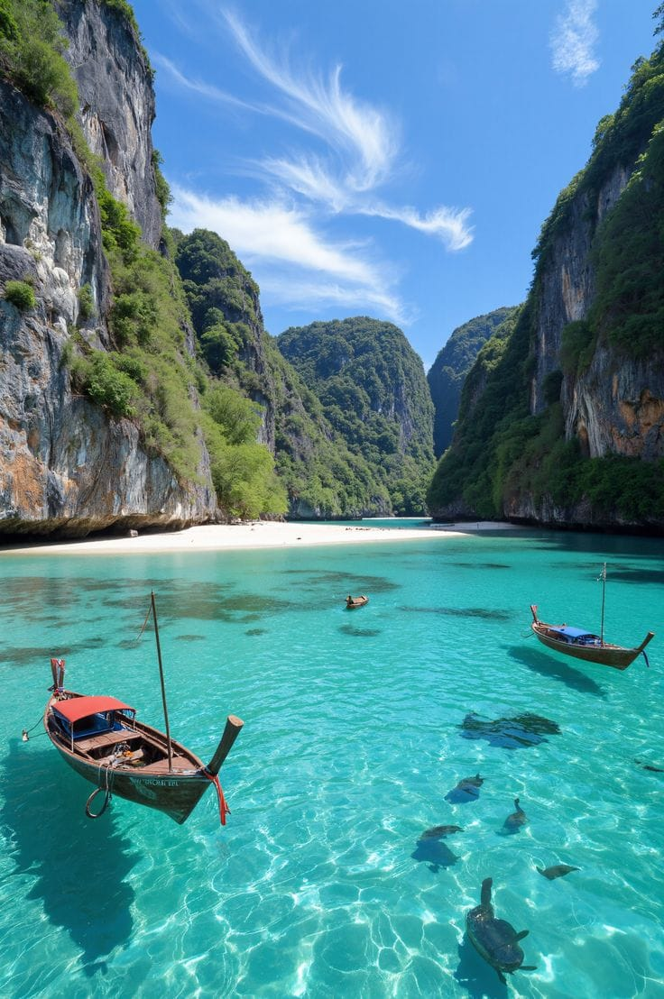

KENYA · WILDLIFE
Maasai Mara
Wide savannah, acacia trees and seasonal migration crossings make the Mara one of Kenya’s most celebrated wildlife destinations.
Explore Mara experiencesPLACES TO GO
From Kenya’s open savannahs to the world’s most loved city and island escapes, start with a place. Browse published LOCKD stays and experiences when local hosts bring them to the catalogue.

Destination guide
These guides are here to spark ideas. Destination photography does not represent an available trip; only published listings include current host details, rates and booking terms.
KENYA · WILDLIFE
Wide savannah, acacia trees and seasonal migration crossings make the Mara one of Kenya’s most celebrated wildlife destinations.
Explore Mara experiences
KENYA · MOUNTAIN VIEWS
Known for elephant herds and sweeping views toward Mount Kilimanjaro, Amboseli offers a striking contrast of wetland and open plain.
Explore Amboseli experiences
GREECE · AEGEAN ISLANDS
Whitewashed villages, blue-domed churches and volcanic caldera views set the scene for a slower island escape.
Explore Santorini experiences
EGYPT · ANCIENT LANDMARKS
Stand before the Great Pyramids and Great Sphinx on the edge of Cairo, then discover the wider stories of Egypt’s capital.
Explore Giza experiences
FRANCE · CITY BREAK
From the Eiffel Tower and riverside walks to neighbourhood cafés, Paris rewards a few unhurried days.
Explore Paris experiences
JAPAN · MOUNTAIN ESCAPES
Japan’s highest peak changes with the season, from spring blossoms at its foothills to clear winter views.
Explore Mount Fuji experiences
UNITED STATES · CITY ESCAPE
Find a different rhythm in Manhattan, from the bright lights of Times Square to the quieter paths of Central Park.
Explore New York experiences
TROPICAL COAST · ISLANDS
Turquoise water, long-tail boats and dramatic limestone cliffs make for a memorable day on the water.
Explore published experiencesThese are destination guides, not bookable offers. Details, availability and pricing are shown on individual approved listings.